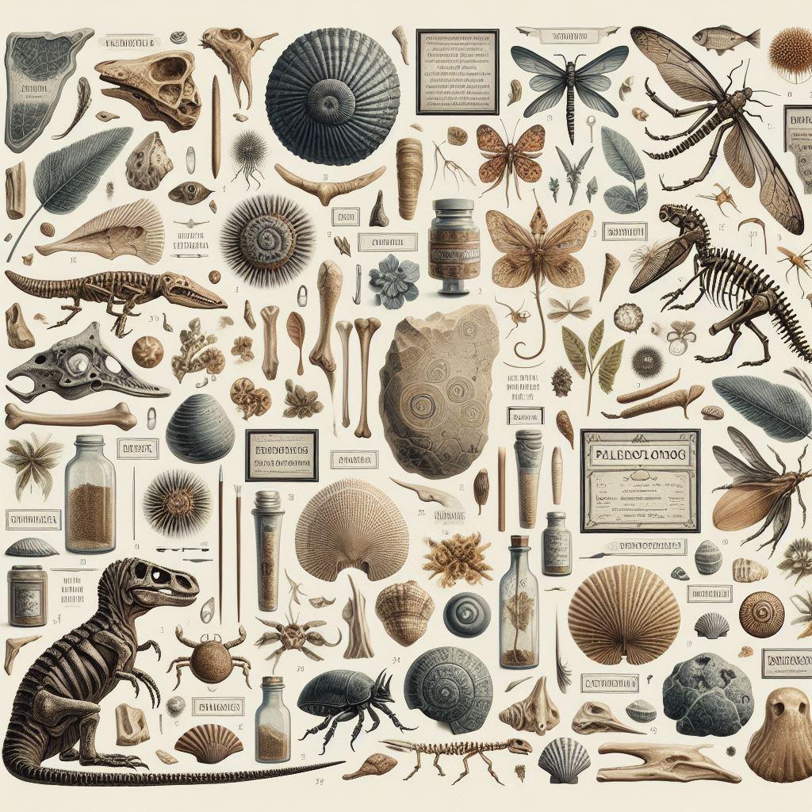

A Paleontológia avagy az Őslénytan:
Az őslénytan idegen szóval paleontológia (görög paleo, "régi", ontosz "létező" és logosz, "tudás' szavakból) a történelem előtti életformák tanulmányozásának tudománya. Az ősmaradványok (fosszíliák) lehetnek testfosszíliák, lábnyomok, járatok, testrészek, fosszilizálódott ürülék (koprolit), palinomorfák, és kémiai maradványok. A modern őslénytan azt tanulmányozza, hogyan hatnak a Föld hosszútávú földrajzi változásai (paleogeográfia vagy ősföldrajz) és éghajlati változásai (őséghajlattan) az élet evolúciójára, hogyan reagálnak az ökorendszerek ezekre a változásokra és mindezek hogyan alakították a biodiverzitást, az élőlények változatosságát. A paleontológia mindemiatt átfedéseket tartalmaz a geológiával, a klimatológiával, a botanikával, a biológiával, a zoológiával és az ökológiával.
Fő ágai az ősállattan (paleozoológia) és az ősnövénytan (paleobotanika). A paleozoológusok szakosodhatnak a gerinctelenek vagy a gerincesek tanulmányozására. A pollenek, spórák tanulmányozása a palinológia tárgykörébe tartozik. A mikroszkópikus maradványokkal a mikropaleontológia foglalkozik.
Paleozoológia:
A paleozoológia olyan ága a paleontológiának, amely a múlt időszakokban élt állatok tanulmányozására fókuszál, azok evolúciójának, elterjedésének és viselkedésének nyomozásával. A paleozoológusok az állati fosszíliákat vizsgálják, melyek a földtörténet különböző periódusaiból származnak. Ezek a maradványok lehetnek csontok, fogak, páncélzatok vagy más, az állatoktól származó anyagok. A kutatások során a paleozoológusok nemcsak a kihalt fajokat tanulmányozzák, hanem az élőlények evolúciós folyamatainak megértése révén hozzájárulnak az állati biológia és ökológia alapvető összefüggéseinek mélyebb megértéséhez is. A paleozoológia tehát fontos szerepet játszik az állatok történeti változatosságának és adaptációjának megismerésében, valamint a Föld életközösségeinek múltbéli alakulásának rekonstruálásában.
A második oldalon találhat egy táblázatot a paleozoológia érdekes korszakairól